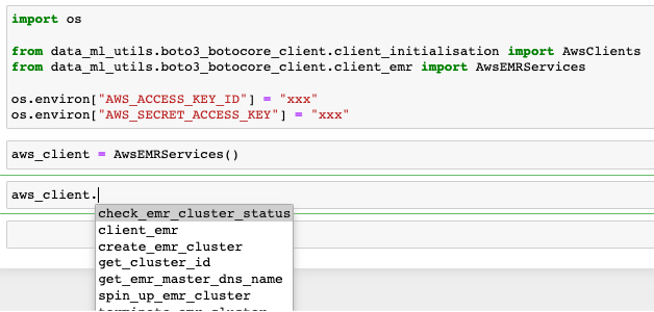

Client boto3 and botocore (EMR)¶
The EMR client class initialises botocore EMR client. It has methods that creates an EMR cluster, check status and terminate cluster.
Environment variables¶
Before initialising the EMR client, we will need to define two environment variables; AWS_ACCESS_KEY_ID, AWS_SECRET_ACCESS_KEY
This can be the gandalf_dev_aws_keypair from KeyBase or your own AWS creds from ~/.aws/credentials
Defining the environment variables can be done through cli or in your .ipynb
cli
$ export AWS_ACCESS_KEY_ID=xxx
$ export AWS_SECRET_ACCESS_KEY=xxx
.ipynb
import os
os.environ["AWS_ACCESS_KEY_ID"] = "xxx"
os.environ["AWS_SECRET_ACCESS_KEY"] = "xxx"
Initialising EMR client¶
We will need to import the python package
from data_ml_utils.boto3_botocore_client.client_emr import AwsEMRServices
And then initialise the class
aws_client = AwsEMRServices()
You can now access the EMR client with aws_client.
The initialisation of this class would have the EMR and boto3 session accessible too.
Create EMR cluster¶
This function creates an EMR cluster.
A successful response return the API response, and raises an exception otherwise
aws_client.create_emr_cluster(
master_instance_type="ml.m5.xlarge",
core_instance_type="m5.xlarge",
core_instance_count=1,
configurations=configurations,
applications=applications,
log_uri="s3n://au-com-hipages-data-scratchpad/shuming-development/elasticmapreduce/",
task_id="test",
identifier="1989-01-01",
bidprice="0.6",
)
Example of configuration: config Example of application: application
Check EMR cluster status¶
This function checks the status of the created EMR cluster. It waits for the cluster to be in WAITING status.
A successful response return 0, and raises an exception otherwise
aws_client.check_emr_cluster_status(
cluster_id="j-2VIIDF2WQVW12"
)
Terminate EMR cluster status¶
This function terminates the created EMR cluster.
A successful response return 0
aws_client.terminate_emr_cluster(
cluster_id="j-2VIIDF2WQVW12"
)
Get EMR cluster id¶
This function gets the EMR cluster id through task and identifier
A successful response return the cluster id
aws_client.get_cluster_id(
task_id="test",
identifier="1989-01-01"
)
Get EMR cluster master dns name¶
This function retrieves the EMR cluster master dns name
A successful response return the EMR cluster master dns name
aws_client.get_emr_master_dns_name(
cluster_id="j-2VIIDF2WQVW12"
)
Wrapper function to spin up EMR cluster¶
This function is a wrapper function that spins up an EMR cluster and uses the check EMR cluster and get master dns name methods
A successful response return 0, and raises an exception otherwise
aws_client.spin_up_emr_cluster(
master_instance_type="ml.m5.xlarge",
core_instance_type="m5.xlarge",
core_instance_count=1,
configurations=configurations,
applications=applications,
log_uri="s3n://au-com-hipages-data-scratchpad/shuming-development/elasticmapreduce/",
task_id="test",
identifier="1989-01-01",
bidprice="0.6",
)